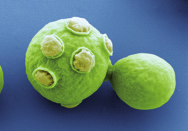

Relaciona los siguientes términos con una función vital de los protozoos: conjugación, movimiento, heterotrofía, bipartición y pluripartición.
Elabora una infografía que muestre las estructuras y órganos más representativos de un paramecio.
Busca información y realiza una presentación sobre la malaria y la enfermedad del sueño, indicando las zonas del mundo en las que son especialmente frecuentes. ¿Crees que su distribución geográfica está relacionada con algún factor social? ¿Hay medios para remediarlo? Cita las fuentes consultadas.
¿En qué se diferencian las algas cianofíceas de las que pertenecen al reino protictistas?
Explica cómo se desplazan los siguientes protozoos:

Vista microscópica de células verdes
Asocia las siguientes afirmaciones con el grupo del reino Protictistas (algas o protozoos) que corresponda:
Son organismos autótrofos.
Sus células poseen ribosomas, mitocondrias, vacuolas y cloroplastos.
El tipo de nutrición es heterótrofa y pueden ser depredadores o detritívoros.
Presentan organización celular eucariota.
Algunos de sus representantes causan graves enfermedades a las personas.
Explica por qué no se clasifica a los hongos ni como algas ni como plantas, aunque sus células pueden parecer celular.
Al referirnos al cuerpo y a la estructura de los hongos pluricelulares, hablamos de hifas y micelio. ¿Son sinónimos estos términos? Razona tu respuesta.
Elabora una presentación que muestre dos ejemplos de hongos saprófitos, parásitos y simbióticos.
Explica brevemente cómo se reproducen los hongos.
Hongo en el bosque
¿Cuál es la diferencia principal entre un moho y una levadura?
¿Son sinónimos los términos hongo y seta? ¿Por qué?
Busca información sobre la recolección de setas y responde a las cuestiones. Indica las fuentes consultadas.
¿Qué actitudes hay que potenciar entre los aficionados a esta actividad para evitar su sobreexplotación y agotamiento?
¿Cuáles son las especies de setas que más se recolectan? ¿Existe alguna relación entre la especie de seta que se recoge y el lugar en el que se encuentra? Razona tu respuesta.
Las micorrizas son asociaciones simbióticas de algunos hongos con las raíces de ciertas plantas. Las hifas del hongo se introducen entre las células de las raíces e introducen en ellas, lo que favorece que la planta absorba agua y sales minerales. ¿Qué beneficio piensas que obtiene el hongo de la planta?
¿Qué tipo de hongos son los de las imágenes?
Trufas en el sueloCrecimiento de moho en un alimentoVista microscópica de protozoosVista microscópica de un protista